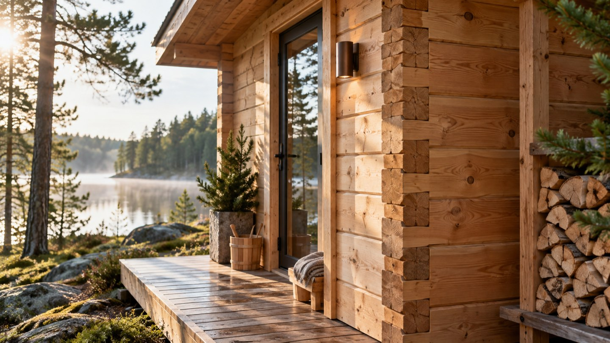
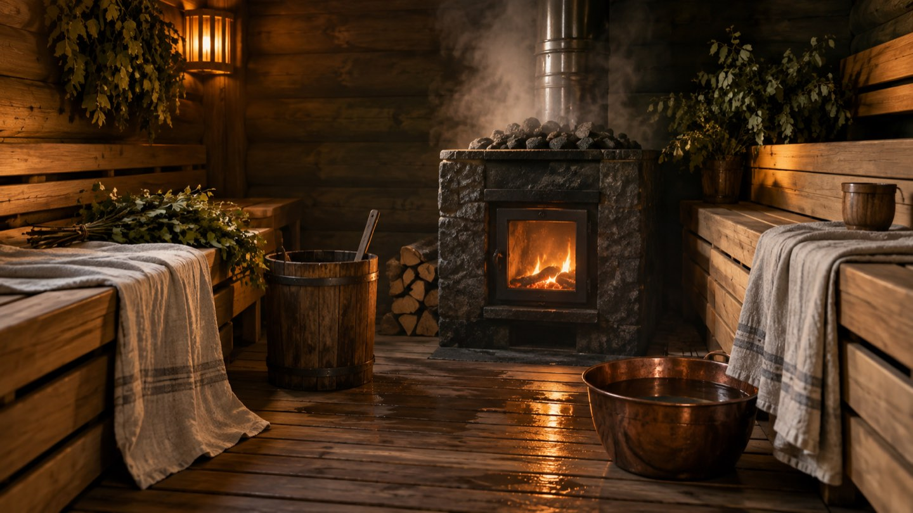
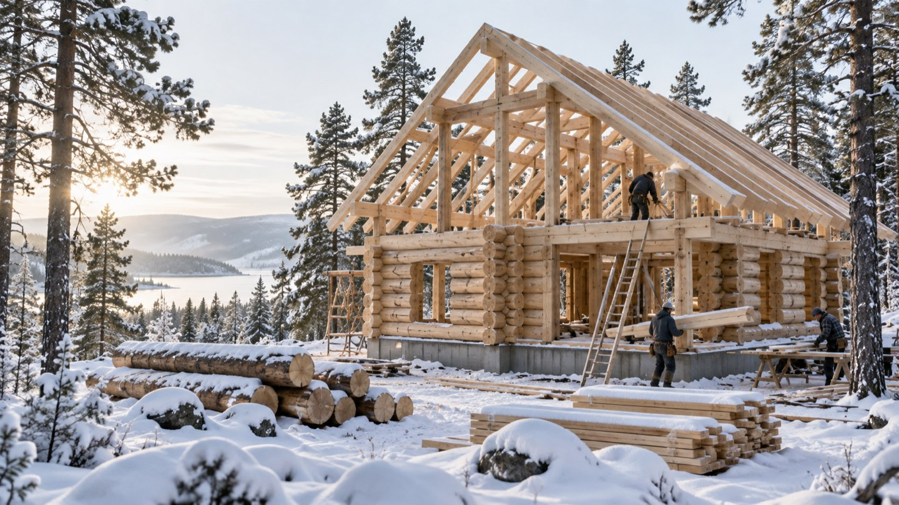
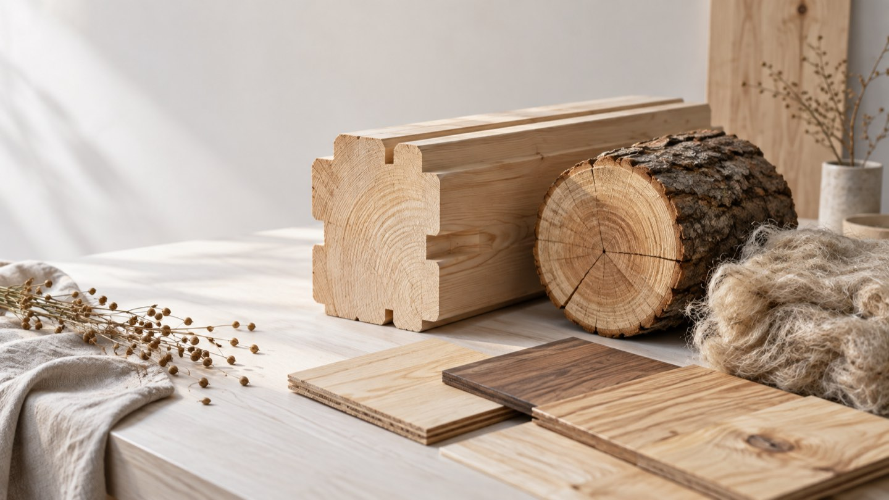
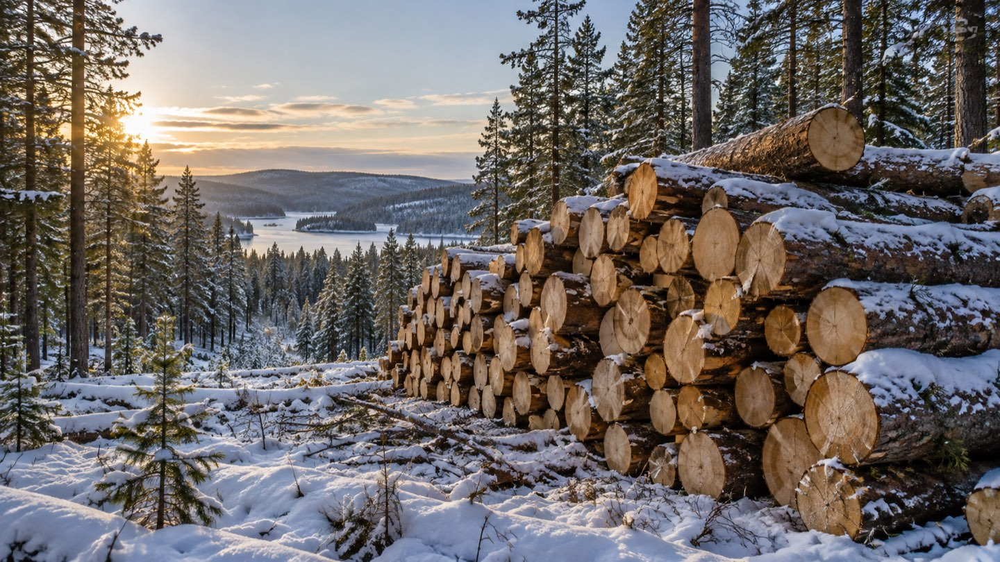
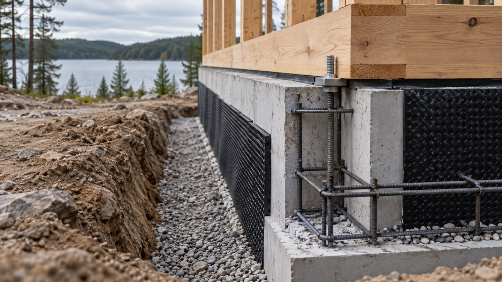
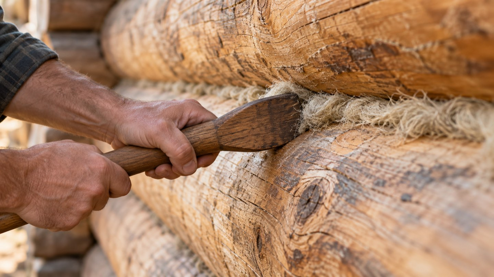

Статьи — часть выбора,
а не архив
Основные темы действующего сайта сохранены и переведены в удобные полноценные материалы с переходами к проектам и услугам.

Баня из бруса
О материале, планировке и ключевых решениях для тёплой бани из натуральной древесины.

Русская деревянная баня для души
Как устроена традиционная баня, из чего складываются её атмосфера, тепло и культура отдыха.

Строим дом зимой
Особенности зимнего строительства, свойства древесины и условия, которые важно учесть на участке.

Выбираем материал для строительства дома
Сравниваем хвойную древесину и разбираем, на что смотреть до начала строительства.

Выбор момента для рубки леса
Почему происхождение и подготовка леса важны для качества будущего сруба.

Фундамент
Грунт, типы оснований и детали, от которых зависит надёжность деревянного дома.

Конопатка деревянного дома
Когда приступать к утеплению межвенцовых швов, какие материалы применяют и как сохранить тепло дома.